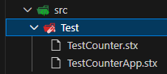
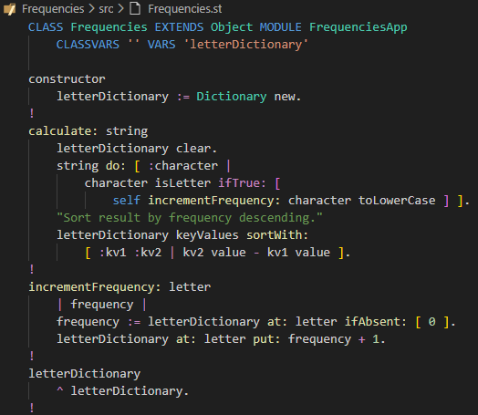
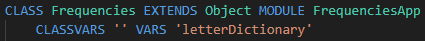
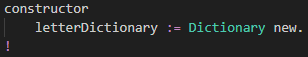
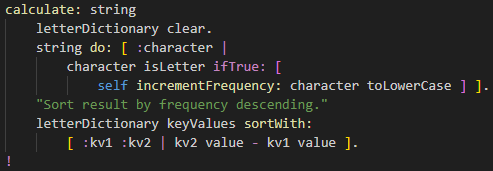
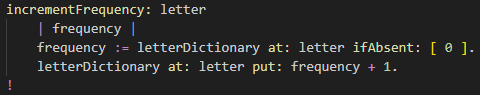
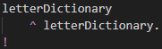

Disable tests
Before continuing with the model first, disable the unit and GUI tests.
In the
./src/Test folder rename the files from
*.st to
*.stx.
Now the compiler will skip them during compilation.
We'll come back to testing after the new functionality has been implemented.

Model source code
The model of our app will be in the class
Frequencies .
In the folder
./src rename the file
Counter.st to
Freqencies.st .
Now replace the counter model code with this code (copy & paste):
CLASS Frequencies EXTENDS Object MODULE FrequenciesApp
CLASSVARS '' VARS 'letterDictionary'
constructor
letterDictionary := Dictionary new.
!
calculate: string
letterDictionary clear.
string do: [ :character |
character isLetter ifTrue: [
self incrementFrequency: character toLowerCase ] ].
"Sort result by frequency descending."
letterDictionary keyValues sortWith:
[ :kv1 :kv2 | kv2 value - kv1 value ].
!
incrementFrequency: letter
| frequency |
frequency := letterDictionary at: letter ifAbsent: [ 0 ].
letterDictionary at: letter put: frequency + 1.
!
letterDictionary
^ letterDictionary.
!
On screen it should look like this:

We'll go through it method by method below.
Class definition

These lines defines the class name
Frequencies and its parent class
Object ,
which is the root class of all SmallJS classes.
The module name
FequenciesApp is the filename the JS code will be generated in.
It is good practice to keep files from the samen app in a single module.
Note: Classes that reference each other mutually must be in the same module.
CLASSVARS is followed by a space separated string of (static)
class variable names.
They are rare, and for this class we don't need any.
VARS is followed by a space separated string of
instance variable names.
Every object created for this class will have its own variables.
The instance variable
letterDictionary will hold a dictionary of letters mapped to their frequency.
Method: constructor

The method named
constructor is special;
it will be called automatically when a new
Frequencies object is created.
Here the variable
letterDictionary in initialized to an empty
Dictionary .
The end of a method is indicated with and exclamation mark
! .
Method: calculate

The method
calculate: string does the real work.
- It first clears the letter dictionary,
- then iterates over the characters of the argument string,
- and only for characters that are letters,
it increments the frequency for its lower case version.
Lastly the dictionary is sorted by value descending.
Method: incrementFrequency

The method
incrementFrequency: letter increases the frequency of a letter by 1.
It declares a local variable called 'frequency' with
| frequency | .
(More variable names would be space separated between the vertical bars.)
First the
letterDictionary is searched for and existing frequency at
letter ,
and if none is found, the default value of
0 is returned.
The result of this expression is assigned to
:= the variable
frequency .
Then the
letterDictionary is updated for the argument
letter with a incremented frequency.
Method: letterDictionary

The method
letterDictionary just returns the instance variable of the same name.
Note: In Smalltalk, class and instance variables are always private to the class they're defined in,
so getter and setter methods are needed if you want to access them from outside it.
This is a
good thing :-).
Now we are ready to create the view for our app.